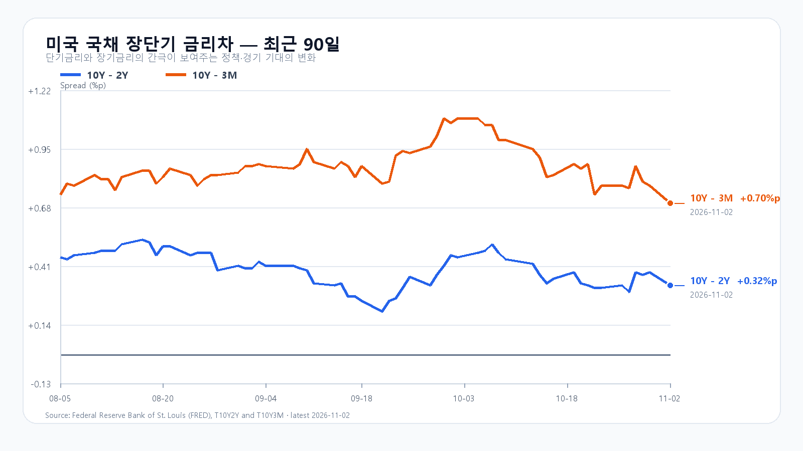
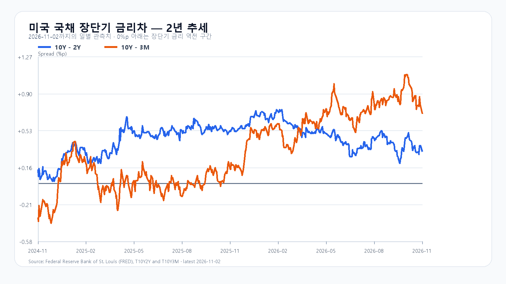

반도체 매도는 이어졌지만 에너지 부담은 줄었습니다. 2일 미국 정규장에서 SOXX는 3.79%, SMH는 2.71% 하락했습니다. 전날 5,859.08로 반등한 코스피에는 추가 부담입니다. 유가 하락과 Apple의 매출 성장은 하단을 받칠 재료지만 반도체 매수세의 복귀까지 보장하지는 않습니다.
전날 반등 뒤 새로 쌓인 반도체 매도
AMD는 7.52%, Micron은 5.78% 내렸고 Nvidia와 Broadcom도 각각 1.26%, 1.18% 하락했습니다. 지난주 Intel 전망 부진과 미국장의 급락은 전날 한국장에 이미 전달됐습니다. 오늘은 그 충격을 다시 전부 더하기보다 한국장 마감 이후 이어진 추가 매도와 시간외 반응을 구분해야 합니다. 미국 시세
한국장은 2일 2.24% 상승하며 5,800선을 회복했습니다. 오늘도 반등을 지키려면 기관 매수와 반도체 가격 지지가 함께 이어져야 합니다. 미국 시간외에서는 주요 반도체주가 정규장 종가보다 소폭 높은 가격에 거래됐습니다. 아직 진행 중인 거래여서 정규장 하락을 되돌렸다고 판단하기는 이릅니다.
유가 하락과 Apple 실적이 주는 완충
이란과 카타르의 협상 소식에 유가가 크게 내렸습니다. 원유 수입 비용과 물가 부담이 줄어드는 방향은 한국 증시에 우호적입니다. 협상 기대가 가격을 움직인 단계인 만큼 합의와 해협 통항 정상화까지 확정된 것으로 볼 수는 없습니다. 협상과 유가
Apple은 4분기 매출 1,145억달러로 전년 대비 12% 성장했고 희석 주당순이익은 2.10달러로 14% 늘었습니다. 주당순이익에는 관세 환급 효과 0.05달러가 포함됐습니다. 소비자 기기 수요에는 힘을 주는 실적이지만 AI 설비투자의 수익성과 자금조달 문제를 곧바로 해결하는 재료는 아닙니다. Apple 발표
메모리 현물과 주가는 다른 속도로 움직인다
TrendForce의 2일 현물 세션에서 DDR5 16Gb 평균은 61.50달러로 보합, DDR4 16Gb는 82.719달러로 0.09% 하락했습니다. 현물의 완만한 움직임과 Micron의 주가 급락 사이에는 간격이 있습니다. 소비자 메모리 현물가격만으로 HBM과 서버용 메모리의 계약 수요를 판단할 수 없으며, 주가에는 실적 기대와 투자비 부담이 함께 반영됩니다. DRAM 현물
5,700선 방어와 5,900선 회복을 나눠 본다
기본 종가 범위는 5,700~5,900, 확률은 50%입니다. 5,900을 넘고 외국인·프로그램 순매수가 함께 붙으면 5,900 초과~6,050의 강세 시나리오 20%를 봅니다. 5,700 아래에서 두 수급이 순매도를 이어가면 5,450~5,700 미만의 약세 시나리오 30%로 기웁니다. 각 경계선을 반대로 넘으면 해당 판단을 접습니다.
KODEX 레버리지는 72,000원을 1차 지지, 전일 종가 75,850원을 반등 기준, 전일 고가 77,465원을 저항으로 봅니다. 공격 10·관망 45·방어 45로 두고 유가의 완충 효과보다 반도체 매도가 강한지 살펴봅니다.
미국 금리차는 2일 기준 10년물과 2년물 사이 0.32%포인트, 10년물과 3개월물 사이 0.70%포인트입니다. 4일 0시에는 미국 구인·이직 보고서, 오전 7시에는 AMD 실적 설명회가 예정돼 있습니다. 6일 오후 10시 30분 고용보고서도 금리와 성장주 평가를 바꿀 변수입니다. 모두 한국시간입니다. FRED · BLS 일정 · AMD 일정
장전 시세
| 항목 | 최근값 | 원천 시각 |
| KOSPI 전일 종가 | 5,859.08 · 2.24% | 2026-11-02T15:30:00+09:00 |
| KODEX 레버리지 전일 종가 | 75,850원 · 4.56% | 조회 2026-11-03T08:03:53+09:00 |
| 하나은행 USD/KRW 고시 | 1,346.00원 | 2026-11-03T06:58:36+09:00 |
| NQF 최근 거래 | 28,223.75 | 2026-11-03T06:59:59+09:00 |
| ESF 최근 거래 | 7,587.00 | 2026-11-03T06:59:59+09:00 |
| CLF 최근 거래 | 96.26 | 2026-11-03T06:59:57+09:00 |
| BZF 최근 거래 | 104.23 | 2026-11-03T06:59:30+09:00 |
미국 시간외 최근 거래
| 종목 | USD | 종가 대비 | 원천 시각 |
| NVDA | 202.96 | +0.45% | 2026-11-03T07:59:22+09:00 |
| AMD | 470.41 | +0.76% | 2026-11-03T07:59:00+09:00 |
| MU | 841.85 | +0.99% | 2026-11-03T07:59:19+09:00 |
| AVGO | 322.76 | +0.16% | 2026-11-03T07:59:09+09:00 |
미국 정규장
| 종목 | 종가 USD | 등락 |
| QQQ | 681.09 | -1.36% |
| TQQQ | 59.46 | -4.11% |
| SOXX | 453.65 | -3.79% |
| SMH | 508.31 | -2.71% |
| NVDA | 202.06 | -1.26% |
| AMD | 466.84 | -7.52% |
| MU | 833.59 | -5.78% |
| AVGO | 322.23 | -1.18% |


Apple 실적 · AMD 일정 · BLS 일정 · DRAM 현물 · 미국 시세 · 유가·협상 · 국내 종가 · 금리차